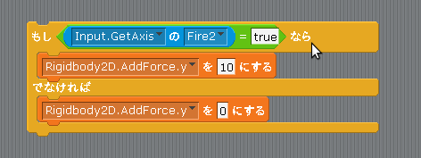
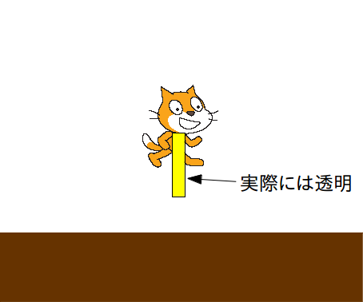
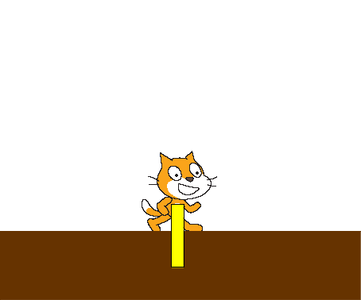

Scratch is developed by the Lifelong Kindergarten Group at the MIT Media Lab. See http://scratch.mit.edu
ジャンプさせる
最後に Cat をジャンプさせてみましょう。
まずキーボードのジャンプキー(今回はxキー)を押しているかどうかの判定はジャンプの時と同様に「Input」クラスの「GetAxis」というメソッドをパラメータに"Fire1"を指定して使います。すると z キーを押していると true、話していると false という値が取得できます。
また、Unity2Dのゲームオブジェクトをジャンプさせるためには「Rigidbody2D」コンポーネントをアタッチしてから「AddForce」メソッドを使います。
この Rigidbody2D コンポーネントの AddForce メソッドはゲームオブジェクトに外部から力を加えるためのメソッドで、力を加える方向と強さを2次元ベクトルで指定します。
例えば Cat の「Update」イベントの中に図1の様なスクリプトを作成して x を押すと Cat は上にジャンプします。
(注) 実際の Unity では AddForce はメソッドなので、AddForce.y のようなプロパティはありません。
また、「そうでなければ AddForce を 0 にする」の部分も必要ありません。
これらは単にscratch2unityの仕様上の問題ですので、Unityの実際のスクリプトではどう書くのかについては自分で調べてみて下さい。
図1: ジャンプスクリプト(駄目な例)

ところがこのスクリプトには Cat が空中にいる時でも x キーを押すとジャンプしてしまうというバグがありますので、 Cat が空中にいるのか地上にいるのか判定してジャンプする必要があります。
さてゲームオブジェクトが空中にいるのか地上にいるのか判定する方法はいくつかありますが、「Physics2D」クラスの「Linecast」メソッドを使う方法が良く使われているようです。
この「Physics2D」クラスの「Linecast」メソッドはあるゲームオブジェクトから目に見えない透明な杖を指定した方向に延ばして、その杖が他のオブジェクトに触れているかを調べるために使います(図2、図3)。
触れていれば true 、触れていなければ false の値が取得できます。
図2: 透明な杖が地面と触れてないので空中にいる

図3: 透明な杖が地面と触れているので地上にいる

今回の scratch2unity では、「もし〜なら」の条件として図4のスクリプトを使うと他のスクリプトに触れているかどうかを判定できます。
(注) 実際の Unity では上下左右に杖を伸ばせますが、今回は簡略化して下方向だけのチェックにしています。
Unityの実際のスクリプトではどう書くのかについては自分で調べてみて下さい。
図4: Linecast で自分の下にオブジェクトがあるかどうか判定